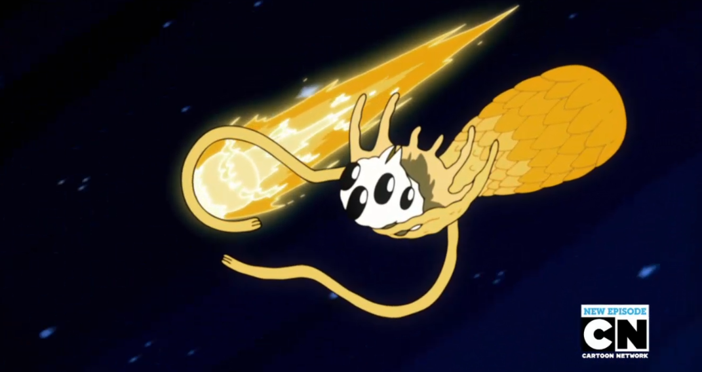

Gunter

Gunter is a penguin from the ice kingdom. He is secretly Orgalorg.
Gunter
- Gunter is Orgalorg an alien from another planet that got turned into a penguin by the pressure of the earths atmosphere.
- Gunter is Ice Kings pet on earth.
Orgalorg
- Orgalorg is an ancient cosmic being of immense power and is very evil.
- Orgalorg is a former alien overlord who ruled over vast galaxies and caused widespread destruction.
- Orgalorg was banished from his original form and forced to be a penguin soon became gunter.
Read about Ice King Next
Go to the Show
[Back to the home page]